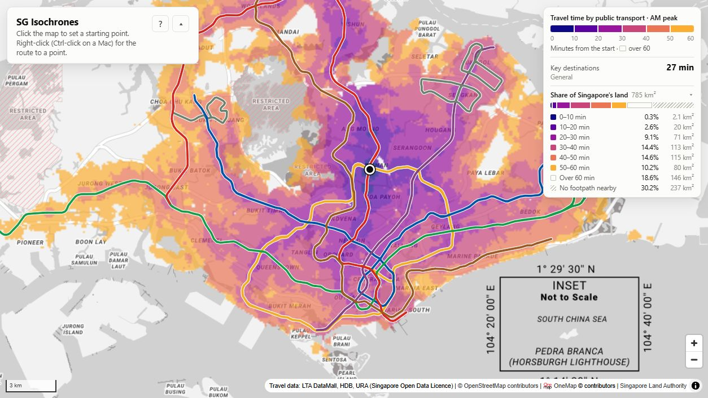
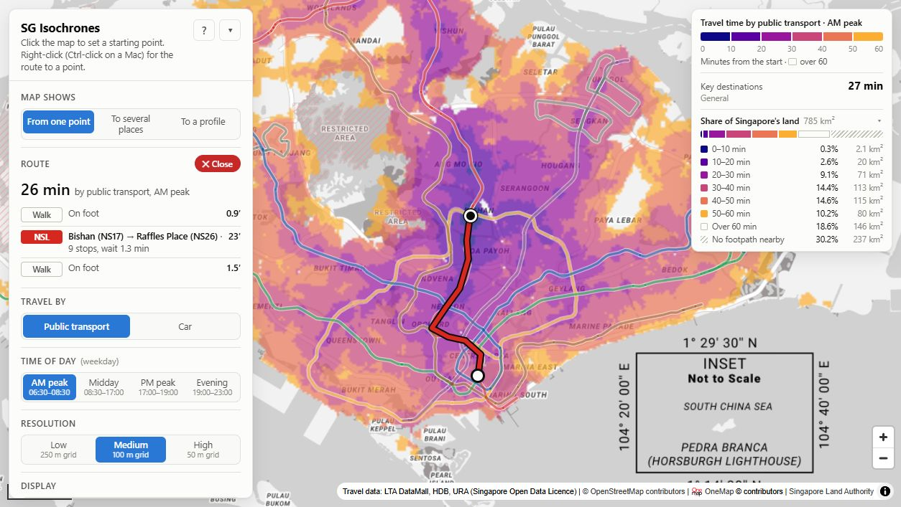
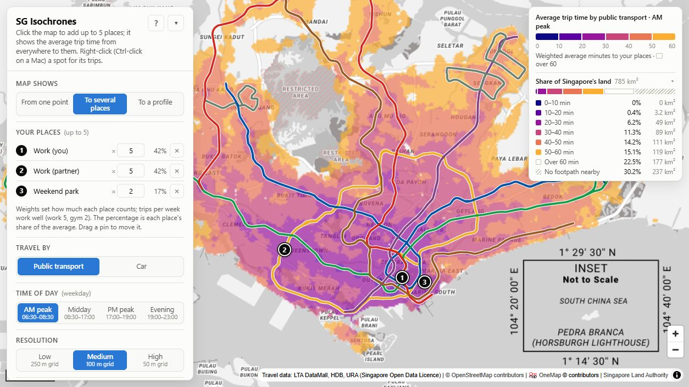
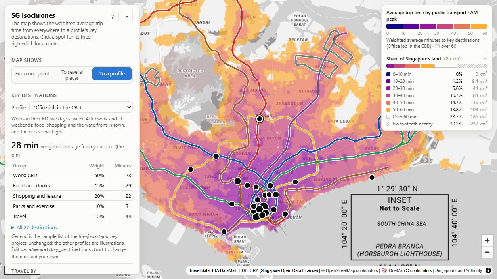
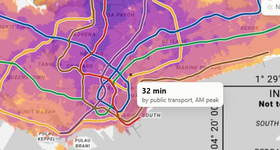
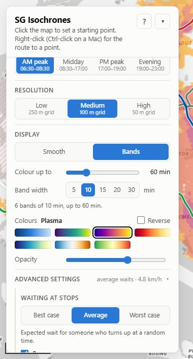

How to use SG Isochrones
Open the map-

1Click the map
Minutes from there to everywhere.
-

2Right-click
The route there. Esc closes it. On a Mac: Ctrl-click.
-

3To several places
Click up to five. See the average trip from anywhere.
-

4To a profile
Pick a lifestyle. Click a spot for its trips.
-

5Hover
Exact minutes.
-

6Settings
Time of day, detail, colours. More under Advanced. Remembered.